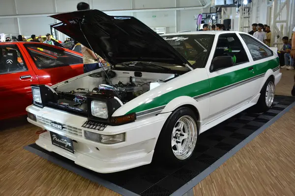

Auto BMW M3 GTR
El BMW M3 GTR es recordado como un icónico modelo de competición y una leyenda del automovilismo, inmortalizado gracias a su controvertida historia y a su fama en el mundo de los videojuegos. Equipado con un potente motor V8, en lugar del tradicional seis cilindros en línea de los M3 estándar, este coche dominó la American Le Mans Series (ALMS) en 2001, lo que llevó a que el reglamento fuera modificado para forzar la retirada de BMW de la competición. Sin embargo, su estatus de culto se consolidó años más tarde como el vehículo protagonista del popular videojuego Need for Speed: Most Wanted (2005), donde su distintiva decoración en azul y plata y su impresionante rendimiento lo convirtieron en un sueño para toda una generación de jugadores.
Ver detalles

Toyota ae86
El Toyota AE86 es recordado y amado por su combinación única de asequibilidad, simplicidad y una experiencia de conducción pura. Con su tracción trasera, peso ligero y excelente equilibrio, se convirtió en una leyenda del drifting en Japón gracias a pilotos como Keiichi Tsuchiya, el "Drift King". Sin embargo, lo que realmente catapultó su estatus a la cultura popular fue su protagonismo en el manga y anime Initial D, donde el modesto auto de reparto de tofu se enfrenta a deportivos mucho más potentes, simbolizando que la habilidad y pasión pueden vencer a la potencia bruta. Su legado perdura como un icono de la cultura JDM y un recordatorio de que la diversión al volante no depende del número de caballos, sino de la conexión entre el conductor y el coche.
Ver detalles